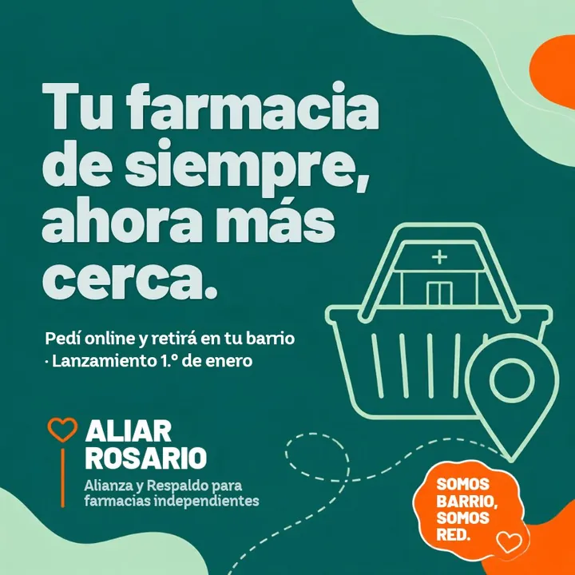
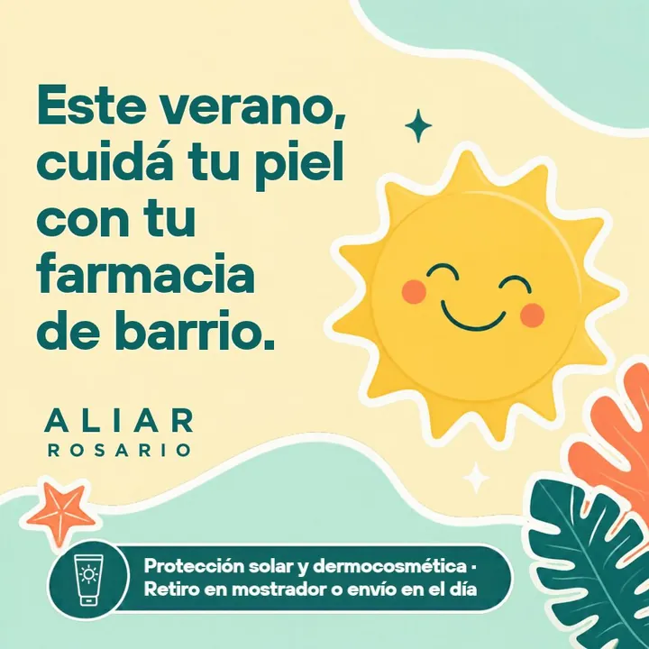

La brecha tecnológica
Las grandes cadenas tienen tienda online, app, envío a domicilio, descuentos y campañas permanentes en redes. Sostener todo eso desde una farmacia sola es caro y lleva un tiempo que detrás del mostrador no existe.
Lanzamiento oficial en Rosario: 1.º de enero de 2027 Inscripción de Farmacias Fundadoras abierta hasta el 10 de diciembre Cupos limitados por barrio
Alianza y Respaldo para farmacias independientes de Rosario Salida 1.º de enero 2027
El 1.º de enero lanzamos ALIAR ROSARIO (Alianza y Respaldo para farmacias independientes): una plataforma común creada para que las farmacias de barrio vendan online, coticen recetas por WhatsApp y lleguen a más vecinos. Vos seguís siendo el único dueño de tu negocio, tu mostrador y tus clientes.
En la etapa piloto no pagás abono mensual: solo una comisión por pedido efectivamente vendido.
La red trabaja para las farmacias independientes, nunca compite con ellas ni te quita el vínculo con el vecino.
Operación pensada junto a referentes farmacéuticos y bajo la normativa vigente en Santa Fe y ANMAT.
Ya contamos con un prototipo web funcional y campañas creativas listas para salir al mercado el 1.º de enero.
La realidad del mostrador hoy
No es porque atiendan mejor. Es porque hoy el vecino se ve obligado a elegir entre la cercanía de su farmacia de siempre y la comodidad de pedir desde el celular.
Las grandes cadenas tienen tienda online, app, envío a domicilio, descuentos y campañas permanentes en redes. Sostener todo eso desde una farmacia sola es caro y lleva un tiempo que detrás del mostrador no existe.
Hoy le vendés sobre todo a quien pasa por tu puerta y dentro de tu horario. Cuando cerrás o cuando el vecino no puede salir de su casa, esa compra se va a otra farmacia.
Una farmacia independiente rara vez tiene información ordenada sobre qué busca la gente de su zona o cómo hacer que un cliente vuelva a comprar todos los meses.
Una farmacia sola no puede pagar la estructura de una cadena. Pero unidas en una misma alianza, las farmacias de barrio de Rosario pueden competir de igual a igual.
Cómo funciona ALIAR ROSARIO
Cada farmacia mantiene su página, su nombre, su estilo y su vidriera de productos, pero se potencia con la fuerza comercial, publicitaria y logística de toda la alianza.
Así se ve la plataforma base actual: cada farmacia con su propio mundo, carrito unificado, canal de recetas y campañas diseñadas para Instagram.
Probalo: elegí una farmacia y agregá productos. Los datos son de ejemplo.
Farmacias de la red cerca de vos
Enviá la foto de tu receta
Kit de campañas de la red
Piezas para Instagram hechas una vez, para todas las farmacias.


Cuando el vecino ingresa su dirección, la plataforma prioriza automáticamente a la farmacia más cercana.
Los clientes pueden comprar productos habilitados de venta libre en la red y el pedido llega ordenado y agrupado para tu farmacia, con retiro en mostrador o envío en el día.
El vecino envía la foto de su receta y los datos de su obra social; un farmacéutico de la red la revisa, cotiza y confirma la dispensa directamente por WhatsApp.
Al estar agrupadas, la alianza muestra siempre qué farmacia de la red está abierta, captando demanda que hoy se escapa hacia las cadenas.
Campañas en Instagram, promociones estacionales y contenido pensado para atraer familias, adultos mayores, trabajadores sin tiempo y pacientes con tratamientos mensuales, sin que tengas que armar un equipo propio.
Plan de lanzamiento real y por etapas
No prometemos soluciones mágicas para mañana. Arrancamos con un piloto sólido, medible y cuidado junto a un primer grupo de farmacias de Rosario, para escalar con resultados reales en la mano.
Hasta el 10 de diciembre de 2026
Entrevistas breves con farmacias interesadas, muestra del prototipo y selección de las primeras 4 a 6 farmacias de barrios distintos.
11 al 28 de diciembre de 2026
Definimos juntas las reglas claras de convivencia (zonas, operativa y estándares) y adaptamos la plataforma web a la identidad de cada farmacia piloto.
1.º de enero de 2027
Salimos al público con la tienda web, gestión de recetas por WhatsApp, retiro en mostrador o envío coordinado y campaña activa en Instagram. Medimos pedidos semanales, ticket promedio y clientes que vuelven a comprar.
Evolución 2027
Con el piloto validado avanzamos hacia la app nativa (iPhone y Android), integración de stock y obras sociales, cobertura de más barrios, expansión al Gran Rosario (Funes, Villa Gobernador Gálvez, Granadero Baigorria y Pérez) y acuerdos de compra en conjunto para mejorar tus márgenes.
Por qué sumarte ahora y no esperar
Sin cuota fija mensual durante el piloto: solo pagás comisión sobre ventas concretadas a través de la plataforma.
Las farmacias fundadoras participan directamente en la definición de los acuerdos de zonas, operación y estándares de la red.
Sos la farmacia referente de tu zona en las primeras campañas publicitarias de lanzamiento en Rosario.
Nuestro equipo te asiste en la adaptación de tu perfil, la carga inicial y el seguimiento semanal de métricas durante todo el piloto.
Seriedad y transparencia desde el día uno
Sabemos que la farmacia no es un comercio más: es un servicio de salud con reglas claras. Por eso ALIAR ROSARIO trabaja con asesoramiento legal y un referente farmacéutico para que cada paso cumpla con la normativa nacional (ANMAT), provincial (Santa Fe) y del Colegio de Farmacéuticos. En la etapa de lanzamiento, la venta online directa se enfoca en productos de venta libre habilitados que no son medicamentos, mientras que toda receta se canaliza y valida siempre con intervención farmacéutica.
[Nombre y apellido]
Coordinador/a general en Rosario
[Nombre y apellido]
Farmacéutico/a referente · Área profesional y normativa
Preguntas frecuentes
¿Tenés otra duda? Escribinos por WhatsApp y te responde el coordinador en Rosario.
Escribir por WhatsAppNo. Cada farmacia mantiene su nombre, su mostrador y la relación directa con sus clientes. La plataforma es una herramienta al servicio de las farmacias independientes para ayudarlas a vender más y fidelizar a su barrio.
Justamente para evitar conflictos entre colegas, el piloto del 1.º de enero arranca con 4 a 6 farmacias distribuidas en barrios distintos y con reglas de convivencia, zonas y precios acordadas de manera transparente antes de salir al público.
Para las Farmacias Fundadoras que ingresen al piloto, el modelo está diseñado sin costo fijo inicial (o cuota bonificada), trabajando únicamente con una comisión por pedido concretado. Si no vendés por la plataforma, no pagás. Los detalles exactos los revisamos juntos en la charla inicial.
Sabemos que un catálogo desactualizado genera problemas en el mostrador. En el piloto trabajaremos de forma ordenada y asistida por nuestro equipo para que no te sume carga operativa, mientras planificamos la integración directa con los sistemas de gestión de cada farmacia para la Etapa 2.
El cliente podrá elegir retiro en tu mostrador (llevándote tráfico directo al local) o envío en el día, ya sea aprovechando tu propia logística si ya hacés envíos o coordinando con un servicio de mensajería de la red.
Sí, siempre que se respeten las incumbencias. La plataforma está diseñada para operar dentro del marco de ANMAT, la Provincia de Santa Fe y el Colegio de Farmacéuticos: venta online de productos habilitados (perfumería, dermocosmética y venta libre no medicamentosa) y gestión/cotización de recetas supervisada por un farmacéutico vía WhatsApp.
No. Queremos que te quedes porque ves ventas nuevas, clientes que vuelven y resultados concretos durante los primeros 3 meses del piloto.
Último pasoCierre de inscripción: 10 de diciembre
Completá estos datos en menos de 1 minuto. Te contactamos por WhatsApp para mostrarte el prototipo en vivo y evaluar el cupo de tu barrio.
Fechas clave
Qué incluye la charla
Gracias por dar el primer paso para sumarte a ALIAR ROSARIO (Alianza y Respaldo para farmacias independientes). Ya registramos tu interés para el lanzamiento del 1.º de enero de 2027.
En las próximas 24 horas hábiles te vamos a escribir por WhatsApp para mostrarte el prototipo funcionando, escuchar qué necesita tu farmacia hoy y revisar la disponibilidad en tu barrio.
Resumen de tu postulación
¿Querés adelantar la charla?
Elegí un horario de 15 minutos (presencial en tu farmacia o por videollamada):
¿Preferís mandarnos un audio o mensaje rápido ahora?
Escribir por WhatsApp al coordinador en Rosario